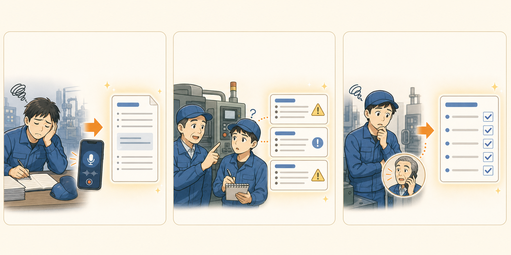

確認が集中する仕事
毎回同じ人に聞いている内容を洗い出し、若手や別担当者が最初に確認できる手順とFAQに整理します。
地方製造業のためのAI業務引き継ぎ支援
ChatGPTの使い方を教えるだけの研修ではありません。
社長、ベテラン社員、現場責任者に張り付いている仕事を整理し、若手や別担当者でも進められる形に整えます。
まずは30分、現場で「誰に確認が集中しているか」を一緒に整理します。
“振れる仕事”とは、その仕事を誰が、どこまで、どう進められるかまで整っている状態です。
こんな課題はありませんか？
提供価値
知識をまとめるだけではありません。
その仕事を、誰が、どこまで、どう進められるか。現場で人に振るために必要な手順・判断基準・FAQまで整えます。
大きなシステム導入ではなく、今ある仕事の進め方を残したまま、AIチャットやテンプレートとして使える形に落とし込みます。
よくある詰まり

毎回同じ人に聞いている内容を洗い出し、若手や別担当者が最初に確認できる手順とFAQに整理します。
「どこまで自分で進めてよいか」「どこから人に聞くべきか」を見える形にして、聞く前に進められる範囲を増やします。
探しにくい資料や口頭説明を、現場の質問に答えやすいAIチャットやテンプレートに整えます。
やること
誰に聞かないと進まない仕事を現場ヒアリングで整理します。
若手、別担当者、事務担当など、任せたい相手と範囲を明確にします。
振るために必要な手順、判断基準、FAQ、確認先をまとめます。
AIチャット、入力テンプレート、チェックリストとして現場で試します。
たとえば
これまで
毎回、社長やベテランに確認しないと次の作業に進めない。
振れる形
最初に見る資料、確認する項目、判断に迷った時の相談先をAIチャットで引ける。
「聞く前に整理できる状態」を作ることで、確認の集中を減らします。
これまで
忙しいベテランが毎回口頭で説明し、新人は何度も聞きづらくて止まる。
振れる形
作業の流れ、間違えやすいところ、やってはいけないことを新人向けメモにする。
人が教える時間をゼロにするのではなく、同じ説明のくり返しを減らします。
これまで
過去に似たことがあっても記録を探せず、結局いつもの人に聞く。
振れる形
発生状況、まず見る場所、確認する人、過去メモをチェックリスト化する。
AIが判断するのではなく、人に聞く前の整理を手伝います。
AIに判断を任せない
進め方
誰に聞かないと進まない仕事を洗い出します。
その仕事を誰に振りたいのか、どこまで任せたいのかを確認します。
振るために必要な手順、判断基準、FAQを整えます。
AIチャットやテンプレート、チェックリストに落とし込みます。
実際に使いながら、足りない項目や言い回しを調整します。
料金目安
内容に応じて個別に調整します。大きなシステム導入ではなく、現場で使える形を一緒に作る支援です。
こんな会社に向いています
AIに興味はある。でも、現場で何から始めればいいかわからない。そんな会社に向いています。
助成金について
ただし、助成金ありきではなく、まずは御社の現場で役に立つ形を一緒に考えます。
石澤の実績
石澤 亮輔（ペスハム） / 株式会社メタマケ 代表
東京ガスで約11年、営業現場、マーケティング、機械学習プロジェクト、人事領域を経験。現在は長野を拠点に、中小企業のAI活用、属人化した業務の整理、現場ヒアリングを支援しています。
Machine Learning PM
ガス機器の故障予測モデル開発で、外部パートナー選定、データ収集戦略、エンジニア・顧客サービス部門との調整を担当。
Public Writing
ChatGPT・Claudeの使い方、AI時代のキャリア、中小企業のAI導入リアル、属人化の話まで、地に足のついた使い方を継続して発信。
Local AI Practice
長野県内の企業約50社へ営業し、松本市の企業、地域公民館、上田市ICT施設などでAI活用講座・ワークショップを実施。
Automation
地方事業者向けの募集案件作成ツールをAIエージェントを使って独自開発し、実業務で運用。参画3ヶ月で月間目標15件も達成。
Learning Contents
メール、フォーム入力、管理画面、SNS投稿など、くり返しブラウザ作業を自動化したい非エンジニア向けの実践教材を制作。2026年6月リリース予定。
相談方法